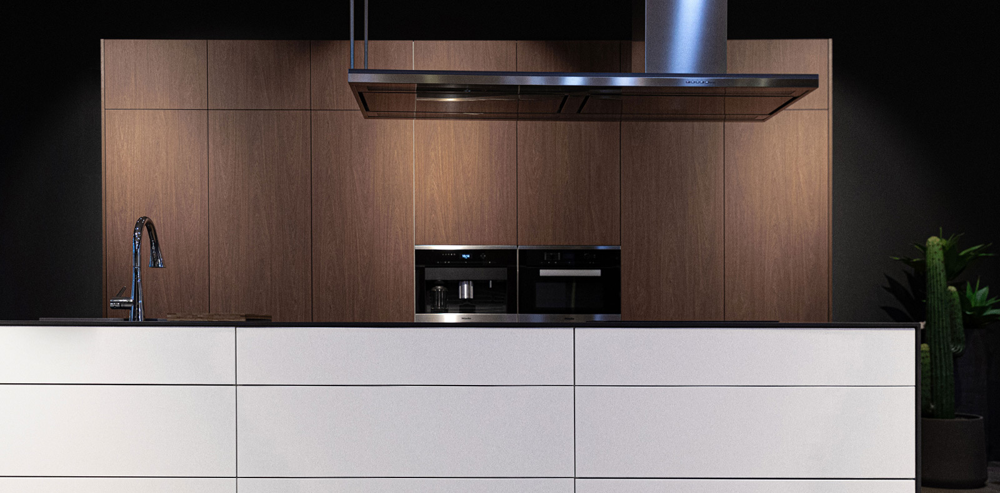
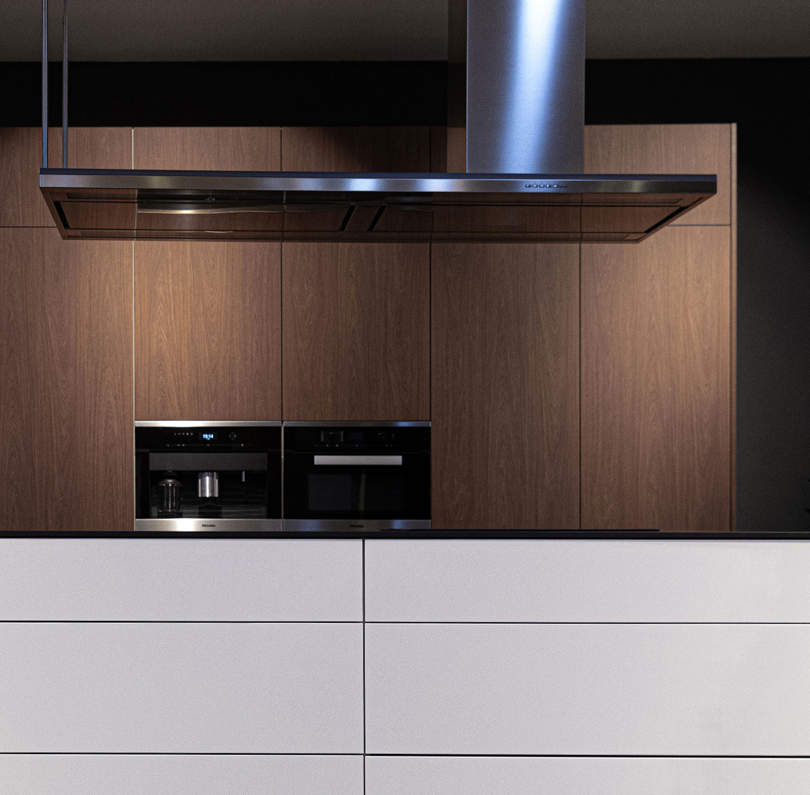

품격 있는 공간
예림 키친
YERIM KITCHEN
디테일이 살아있는 품격 있는 공간,
예림키친은 일상을 디자인 합니다.
예림키친은 일상을 디자인 합니다.
주방가구 브랜드 예림 인테리어 키친은 KS 규격의 E0 친환경 자재를 사용하여
쾌적한 실내 환경을 제공합니다.
예림만의 오랜 노하우로 인정받은 탁월한 내오염성과 향균력, 최상의 표면 품질의
예림보드 ‘럭스’ 로 프리미엄 주방가구의 새로운 시대를 열어가고 있습니다.
쾌적한 실내 환경을 제공합니다.
예림만의 오랜 노하우로 인정받은 탁월한 내오염성과 향균력, 최상의 표면 품질의
예림보드 ‘럭스’ 로 프리미엄 주방가구의 새로운 시대를 열어가고 있습니다.